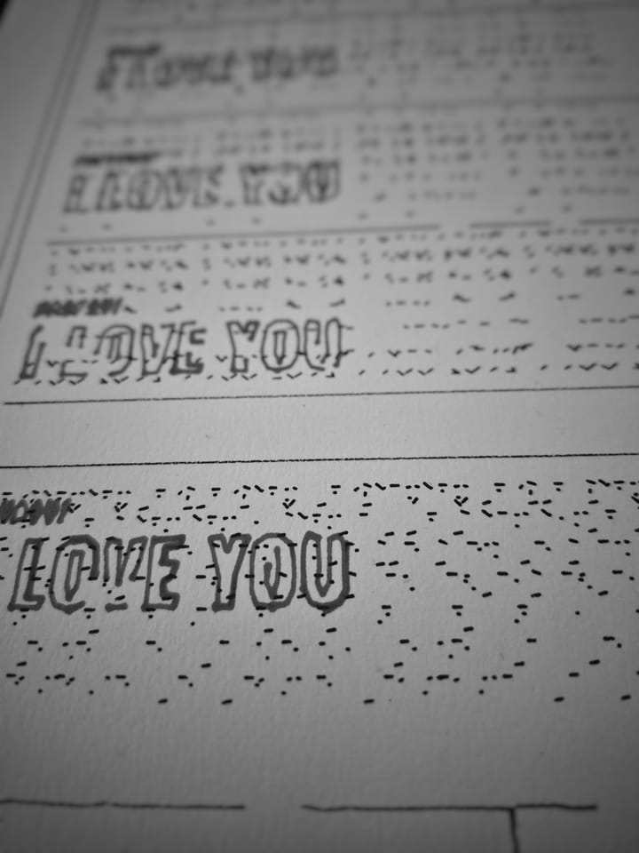

“Writing is fifty years behind painting.”
Brion Gysin · “Cut-Ups Self-Explained”
The library begins there—not with imitation, but with writing treated as drawing material: cut, permuted, worn, and returned to paper by a pen.
-> origin, distance, sources
Three scripts: drawn matter, language operations, typewriter voice. Each keeps its own sheet of live works.
A word can stand alone as a drawn body. The core also carries shapes, fields, and finished traces to paper.
Start with clean vector forms and let p5.gysin turn them into uncertain plotter traces.
const plot = new GysinPlot({ seed: 1960 });
const outlineFont = await loadFont(FONT_URL); // real letterforms
// the same word, three states of the same trace
plot.text("FIRST TRACE", 68, 90, {
font: outlineFont,
size: 54,
breathe: 0.4
});
plot.text("FIRST TRACE", 68, 180, {
font: outlineFont,
size: 54,
breathe: 1.4,
dropout: 0.08
});
plot.text("FIRST TRACE", 68, 270, {
font: outlineFont,
size: 54,
breathe: 2.2,
dropout: 0.2,
rubout: 0.2
});Shift a few contour bands after the word is already working. This is a graphical disturbance, not the historical cut-up procedure.
// use once, as a surface shift
const outlineFont = await loadFont(FONT_URL);
plot.textCutup("SURFACE", 76, 220, {
font: outlineFont,
size: 84,
slices: 5,
sliceOffset: 12
});WORN, in three passages: intact, cut, buried.
const plot = new GysinPlot({ seed: 1960 });
const outlineFont = await loadFont(FONT_URL); // fills the legible head
// one word: legible → cut up → asemic
plot.rub("WORN", 46, 72, {
size: 48,
font: outlineFont
});
plot.draw();Four controls, four elements: breathe, rubout, repeat, dropout.
// one slider owns one element, each in its own ink
plot.text("RUB OUT", 42, 90, {
size: 44,
breathe: 1.4,
stroke: "#b26a00"
});
plot.text("ERASE", 42, 160, {
size: 30,
rubout: 0.12,
stroke: "#b0203a"
});
plot.path(wave, { // wave: a sampled sine row
repeat: 2,
drift: 2.4,
stroke: "#2b4fb0"
});
for (let i = 0; i < 6; i++) { // a ruled block, no fill
plot.line(42, 240 + i * 9, 380, 240 + i * 9, {
dropout: 0.16,
stroke: "#0f7a6c"
});
}Use a real p5 font and preserve its outer contours and inner counters as plotter paths.
const outlineFont = await loadFont(FONT_URL);
plot.text("O8BR", 70, 190, {
font: outlineFont,
size: 150,
breathe: 0.9,
repeat: 2
});Treat paths as fragile signals: no typography, only a scored machine reading made from vector paths and markers.
const signal = [];
for (let x = 0; x <= 620; x += 8) {
signal.push([x, y + sin(x * 0.04) * 28]);
}
// row after row of the same signal, each a step more worn
plot.path(signal, {
dropout: 0.05 + row * 0.01,
repeat: 2,
rubout: 0.06 + row * 0.03
});Ink gathers in shifted return passages. Blade export keeps only the first.
// the ink returns harder on each line
plot.text("I AM THAT I AM", 42, 90, { font: outlineFont, size: 34 });
plot.text("I AM THAT I AM", 42, 180, {
font: outlineFont,
size: 34,
bleed: 0.22,
bleedPasses: 2
});
plot.text("I AM THAT I AM", 42, 270, {
font: outlineFont,
size: 34,
bleed: 0.4,
bleedPasses: 3,
bleedSpread: 1.2
});A practical calibration sheet for margins, circles, dropout, overshoot, multi-pen output, and route statistics.
const page = { width: 210, height: 297, units: "mm", margin: 10, scale: 1 / 3, clip: true };
plot.downloadHPGL("calibration.hpgl", {
page,
penMap: { frame: 1, circle: 2, hatch: 3 },
speed: 20
});The same generated traces drive canvas drawing and vector export.
loads p5.gysin.min.js + p5.gysin.underwood.min.js
const page = {
width: 210, height: 297, units: "mm",
margin: { top: 48.5, right: 5, bottom: 48.5, left: 5 },
scale: 200 / 560, clip: true
};
const penMap = { frame: 1, type: 2, field: 3 };
const svg = plot.exportPlotterSVG({ page, penMap });
const json = plot.exportJSON({
includeGenerated: true
});
const hpgl = plot.exportHPGL({ page, penMap });A sentence stays readable while its order or source changes. permute() turns one phrase; weave() brings separate sources together without losing their provenance.
The same words return in changing positions. Their order carries the movement.
loads p5.gysin.min.js + p5.gysin.text.min.js
const plot = new GysinPlot({ seed: 1960 });
plot.chant("I LOVE YOU", width * 0.075, height * 0.12, {
lines: 6,
size: width * 0.11,
leading: height * 0.14,
font: outlineFont
});
plot.draw();Fragments from separate texts cross. The JSON keeps the address of every borrowed piece.
loads p5.gysin.min.js + p5.gysin.text.min.js
const plot = new GysinPlot({ seed: 1960 });
plot.weave(sources, width * 0.055, height * 0.145, {
lines: 4,
unit: "clause",
fragments: 2,
maxWidth: width * 0.89
});
plot.draw();The sheet turns between passages. A grid persists; orders cross it at their own angles.
loads p5.gysin.min.js + p5.gysin.text.min.js
// write the field, turn the sheet, write across - then the script over it
plot.lattice("COME TO FREE THE WORDS", -15, -15, 730, 1190, { turns: [4, 94] });
GysinText.permute("COME TO FREE THE WORDS", { order: "rotate" })
.forEach((row, i) => {
plot.text(row, x[i], y[i], { size: 24, angle: a[i] });
});Longer voice gets fixed pitch, line height, margins, and a page. The machine keeps only two decorations: an underscore rule and the same key struck twice.
Fixed-pitch single-stroke letters. The underscore is a rule; emphasis is a second strike.
loads p5.gysin.min.js + p5.gysin.text.min.js + p5.gysin.underwood.min.js
// defaults alone = a period-correct typed page
plot.underwood("KICK THAT HABIT MAN", 60, 90);
// the only decoration the machine had:
plot.underwood("HEADING", 60, 130, { underline: 1 });
plot.underwood("BOLD?", 60, 160, { bold: true }); // struck twice
// both cases live on the same keys:
plot.underwood("the small voice.", 60, 190);A complete typed letter. One word is struck through.
loads p5.gysin.min.js + p5.gysin.underwood.min.js
plot.underwood("DEAR READER,", 60, 90, { underline: 1 });
plot.underwood("FORGET", 60, 150);
plot.underwood("XXXXXX", 60, 150, { bold: true }); // struck over
plot.underwood("the small hand.", 60, 210);The same seeded traces pass through canvas and onto paper. Methods, addressing and export live in System.